손해평가사 (2016-06-25 기출문제)
1과목: 상법(보험편)
1. 보험약관의 중요한 내용에 대한 보험자의 설명의무가 발생하지 않는 경우를 모두 고른 것은? (다툼이 있으면 판례에 따름)
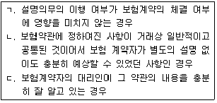
- ㄷ
- ㄱ, ㄴ
- ㄴ, ㄷ
- ㄱ, ㄴ, ㄷ
(정답률: 68%)

2. 보험증권에 관한 설명으로 옳지 않은 것은?
- 보험계약자가 보험료의 전부 또는 최초의 보험료를 지급하지 아니한 때에는 보험자의 보험증권교부의무가 발생하지 않는다.
- 기존의 보험계약을 변경한 경우에는 보험자는 그 보험증권에 그 사실을 기재함으로써 보험증권의 교부에 갈음할 수 있다.
- 보험계약의 당사자는 보험증권의 교부가 있은 날로부터 10일내에 한하여 그 증권내용의 정부에 관한 이의를 할 수 있음을 약정할 수 있다.
- 보험계약자의 청구에 의하여 보험증권을 재교부하는 경우 그 증권작성의 비용은 보험계약자가 부담한다.
(정답률: 76%)
3. 보험대리상이 아니면서 특정한 보험자를 위하여 계속적으로 보험계약의 체결을 중개하는 자가 행사할 수 있는 권한으로 옳은 것은?
- 보험자가 작성한 영수증을 보험계약자에게 교부하지 않고 보험계약자로부터 보험료를 수령할 수 있는 권한
- 보험계약자로부터 보험계약의 청약에 관한 의사표시를 수령할 수 있는 권한
- 보험계약자에게 보험계약의 체결에 관한 의사표시를 할 수 있는 권한
- 보험자가 작성한 보험증권을 보험계약자에게 교부할 수 있는 권한
(정답률: 78%)
4. 보험계약의 해지와 특별위험의 소멸에 관한 설명으로 옳은 것은?
- 타인을 위한 보험계약의 경우 보험증권을 소지하지 않은 보험계약자는 그 타인의 동의를 얻지 않은 경우에도 보험사고가 발생하기 전에는 언제든지 계약의 전부 또는 일부를 해지할 수 있다.
- 보험사고의 발생으로 보험자가 보험금액을 지급한 때에도 보험금액이 감액되지 아니하는 보험의 경우에는 보험계약자는 그 사고발생 후에도 보험계약을 해지할 수 있다.
- 보험사고가 발생하기 전에 보험계약의 전부 또는 일부를 해지하는 경우에 보험계약자는 당사자 간에 다른 약정이 없으면 미경과보험료의 반환을 청구할 수 없다.
- 보험계약의 당사자가 특별한 위험을 예기하여 보험료의 액을 정한 경우에 보험기간 중 그 예기한 위험이 소멸한 때에도 보험계약자는 그 후의 보험료의 감액을 청구할 수 없다.
(정답률: 80%)
5. 보험료의 지급과 지체에 관한 설명으로 옳지 않은 것은?
- 보험료는 보험계약자만이 지급의무를 부담하므로 특정한 타인을 위한 보험의 경우에 보험계약자가 보험료의 지급을 지체한 때에는 보험자는 그 타인에 대한 최고 없이도 그 계약을 해지할 수 있다.
- 보험자의 책임은 당사자 간에 다른 약정이 없으면 최초의 보험료의 지급을 받은 때로부터 개시한다.
- 보험계약자가 보험료를 지급하지 아니하는 경우에는 다른 약정이 없는 한 계약성립 후 2월이 경과하면 그 계약은 해제된 것으로 본다.
- 계속보험료가 약정한 시기에 지급되지 아니한 때에는 보험자는 상당한 기간을 정하여 보험 계약자에게 최고하고 그 기간 내에 지급되지 아니한 때에는 그 계약을 해지할 수 있다.
(정답률: 88%)
6. 보험계약의 부활에 관하여 ( )에 들어갈 내용으로 옳은 것은?
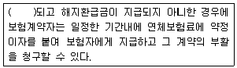
- 위험변경증가의 통지의무 위반으로 인하여 보험계약이 해지
- 고지의무위반으로 인하여 보험계약이 해지
- 계속보험료의 불지급으로 인하여 보험계약이 해지
- 보험계약의 전부가 무효로
(정답률: 94%)
7. 보험계약의 성질이 아닌 것은?
- 낙성계약
- 무상계약
- 불요식계약
- 선의계약
(정답률: 89%)
8. ( )에 들어갈 내용이 순서대로 올바르게 연결된 것은?
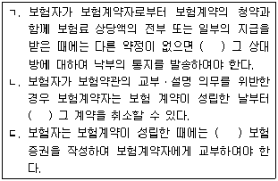
- 30일내에 - 3개월 이내에 - 지체없이
- 30일내에 - 30일내에 - 지체없이
- 지체없이 - 3개월 이내에 - 30일내에
- 지체없이 - 30일내에 - 30일내에
(정답률: 78%)
9. 손해보험계약에서의 보험가액에 관한 설명으로 옳지 않은 것은?
- 초과보험에서 보험가액은 계약당시의 가액에 의하여 정한다.
- 일부보험이란 보험가액의 일부를 보험에 붙인 경우를 말한다.
- 당사자 간에 보험가액을 정하지 아니한 때에는 사고발생시의 가액을 보험가액으로 한다.
- 기평가보험에서의 보험가액이 사고발생시의 가액을 현저하게 초과할 때에는 계약당시에 정한 보험가액으로 한다.
(정답률: 72%)
10. 손해보험계약에 관한 설명으로 옳지 않은 것은?
- 피보험자도 손해방지의무를 부담한다.
- 보험자는 손해의 방지와 경감을 위하여 필요 또는 유익하였던 비용과 보상액이 보험금액을 초과하는 경우에도 이를 부담한다.
- 보험목적의 양도 사실의 통지의무는 양도인만이 부담한다.
- 보험자는 보험목적의 하자로 인한 손해를 보상할 책임이 없다.
(정답률: 82%)
11. 손해보험에서 보험가액과 보험금액과의 관계에 관한 설명으로 옳지 않은 것은?
- 보험금액이 보험계약의 목적의 가액을 현저하게 초과한 때에 보험자는 보험금액의 감액을 청구할 수 있지만, 보험계약자는 보험료의 감액을 청구할 수 없다.
- 일부보험의 경우에 보험계약의 당사자들은 보험자가 보험금액의 보험가액에 대한 비율과 상관없이 보험금액의 한도 내에서 그 손해를 보상할 책임이 있다는 약정을 할 수 있다.
- 중복보험에서 수인의 보험자 중 1인에 대하여 피보험자가 권리를 포기하여도 다른 보험자의 권리의무에 영향을 미치지 않는다.
- 중복보험에서 보험자가 각자의 보험금액의 한도에서 연대책임을 지는 경우 각 보험자의 보상책임은 각자의 보험금액의 비율에 따른다.
(정답률: 85%)
12. 손해보험계약에 관한 설명으로 옳은 것은?
- 피보험이익은 반드시 금전으로 산정할 수 있어야 하는 것은 아니다.
- 보험사고로 인하여 상실된 피보험자가 얻을 이익은 당사자 간에 다른 약정이 없으면 보험자가 보상할 손해액에 산입한다.
- 피보험이익은 보험의 목적을 의미한다.
- 보험자는 보험의 목적인 기계의 자연적 소모로 인한 손해에 대하여는 보상책임이 없다.
(정답률: 71%)
13. 고지의무에 관한 설명으로 옳은 것은?
- 보험자는 보험대리상의 고지수령권을 제한할 수 없다.
- 보험자가 서면으로 질문한 사항은 중요한 고지사항으로 간주된다.
- 보험계약자는 고지의무가 있다.
- 보험자는 보험사고 발생 전에 한하여 고지의무 위반을 이유로 하여 해지할 수 있다.
(정답률: 79%)
14. 위험변경증가의 통지의무에 관한 설명으로 옳지 않은 것은?
- 보험자는 보험계약자 또는 피보험자가 위험변경증가의 통지의무를 고의 또는 중과실로 해태한 경우에만 그 통지의무 위반을 이유로 계약을 해지할 수 있다.
- 보험기간 중에 보험계약자는 사고발생의 위험의 현저한 증가 사실을 안 때에는 지체없이 보험자에게 통지하여야 한다.
- 보험기간 중에 피보험자는 사고발생의 위험의 현저한 변경 사실을 안 때에는 지체없이 보험자에게 통지하여야 한다.
- 보험자가 피보험자로부터 위험변경증가의 통지를 받은 때에는 1월내에 보험료의 증액을 청구하거나 계약을 해지할 수 있다.
(정답률: 74%)
15. 소멸시효기간이 다른 하나는?
- 보험금청구권
- 보험료청구권
- 보험료의 반환청구권
- 적립금의 반환청구권
(정답률: 84%)
16. 보험약관의 교부ㆍ설명의무에 관한 설명으로 옳은 것을 모두 고른 것은?
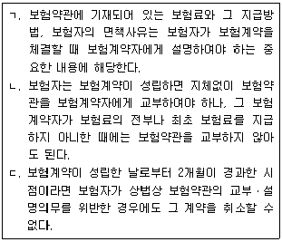
- ㄱ
- ㄷ
- ㄱ, ㄴ
- ㄴ, ㄷ
(정답률: 50%)
17. 손해보험에 관한 설명으로 옳은 것은?
- 집합된 물건을 일괄하여 보험의 목적으로 한 때에는 그 목적에 속한 물건이 보험기간 중 수시로 교체된 경우에도 보험사고의 발생 시에 현존하는 물건은 보험의 목적에 포함된 것으로 한다.
- 보험계약자는 불특정의 타인을 위하여는 보험계약을 체결할 수 없다.
- 손해가 피보험자와 생계를 같이 하는 가족의 고의로 인하여 발생한 경우에 보험금의 전부를 지급한 보험자는 그 지급한 금액의 한도에서 그 가족에 대한 피보험자의 권리를 취득하지 못한다.
- 타인을 위한 보험에서 보험계약자가 보험료의 지급을 지체한 때에는 그 타인이 그 권리를 포기하여도 그 타인은 보험료를 지급하여야 한다.
(정답률: 82%)
18. 손해보험에 있어서 보험사고와 보험금지급에 관한 설명으로 옳지 않은 것은?
- 피보험자는 보험사고의 발생을 안 때에는 지체없이 보험자에게 그 통지를 발송하여야 한다.
- 보험자는 보험금액의 지급에 관하여 약정기간이 없는 경우는 보험사고 발생의 통지를 받은 날로부터 10일내에 피보험자 또는 보험수익자에게 보험금액을 지급하여야 한다.
- 보험사고가 보험계약자의 중대한 과실로 인하여 생긴 때에는 보험자는 보험금액을 지급할 책임이 없다.
- 보험사고가 전쟁으로 인하여 생긴 때에는 당사자 간에 다른 약정이 없으면 보험자는 보험 금액을 지급할 책임이 없다.
(정답률: 76%)
19. 손해보험증권에 반드시 기재해야 하는 사항이 아닌 것은?
- 보험의 목적
- 보험자의 설립년월일
- 보험료와 그 지급방법
- 무효와 실권의 사유
(정답률: 90%)
20. 일부보험에 있어서 일부손해가 발생하여 비례보상원칙을 적용한 결과에 관한 설명으로 옳지 않은 것은?
- 손해액은 보험가액보다 적다.
- 보험가액은 보상액보다 크다.
- 보상액은 손해액보다 적다.
- 보험금액은 보험가액보다 크다.
(정답률: 81%)
21. 보험대리상이 갖는 권한이 아닌 것은?
- 보험계약자로부터 보험료를 수령할 수 있는 권한
- 보험계약자로부터 보험계약의 취소에 관한 의사표시를 수령할 수 있는 권한
- 보험자로부터 보험금을 수령할 수 있는 권한
- 보험계약자에게 보험계약의 변경에 관한 의사표시를 할 수 있는 권한
(정답률: 85%)
22. 손해보험에서 손해액 산정에 관한 설명으로 옳은 것은?
- 당사자 간에 다른 약정이 없으면 보험자가 보상할 손해액은 그 손해가 발생한 때와 곳의 가액에 의한다.
- 손해가 발생한 때와 곳의 가액보다 신품가액이 작은 경우에는 당사자 간에 다른 약정이 없으면 신품가액에 따라 손해액을 산정하여야 한다.
- 손해액의 산정에 관한 비용은 보험계약자의 부담으로 한다.
- 보험사고로 인하여 상실된 피보험자의 보수는 당사자 간에 다른 약정이 없으면 보험자가 보상할 손해액에 산입한다.
(정답률: 77%)
23. 상법 제681조(보험목적에 관한 보험대위)의 내용이다. ( )에 들어갈 내용을 순서대로 올바르게 연결된 것은?
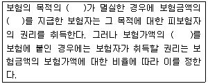
- 전부 또는 일부 - 일부 - 전부
- 전부 - 일부 - 일부
- 전부 또는 일부 - 일부 - 일부
- 전부 - 전부 - 일부
(정답률: 75%)
24. 보험계약에 관한 설명으로 옳지 않은 것은?
- 보험계약은 그 계약 전의 어느 시기를 보험기간의 시기로 할 수 있다.
- 대리인에 의하여 보험계약을 체결한 경우에 대리인이 안 사유는 그 본인이 안 것과 동일한 것으로 한다.
- 보험자가 손해를 보상할 경우에 보험료의 지급을 받지 아니한 잔액은 그 지급기일이 도래한 이후에만 보상할 금액에서 공제할 수 있다.
- 보험자는 보험사고로 인하여 부담할 책임에 대하여 다른 보험자와 재보험계약을 체결할 수 있다.
(정답률: 87%)
25. 화재보험에 관한 설명으로 옳지 않은 것은?
- 건물을 보험의 목적으로 한 때에는 그 소재지, 구조와 용도를 화재보험증권에 기재하여야 한다.
- 보험자는 화재의 소방에 따른 손해를 보상할 책임이 있다.
- 보험자는 화재의 손해의 감소에 필요한 조치로 인한 손해를 보상할 책임이 있다.
- 동산은 화재보험의 목적으로 할 수 없다.
(정답률: 88%)
2과목: 농어업재해보험법령
26. 농어업재해보험법령상 농업재해보험심의회 및 회의에 관한 설명으로 옳지 않은 것은?
- 심의회는 위원장 및 부위원장 각 1명을 포함한 21명 이내의 위원으로 구성한다.
- 위원장은 심의회의 회의를 소집하며, 그 의장이 된다.
- 심의회의 회의는 재적위원 5분의 1 이상의 요구가 있을 때 또는 위원장이 필요하다고 인정할 때에 소집한다.
- 심의회의 회의는 재적위원 과반수의 출석으로 개의(開議)하고, 출석위원 과반수의 찬성으로 의결한다.
(정답률: 86%)
27. 농어업재해보험법상 다음 설명에 해당되는 용어는?
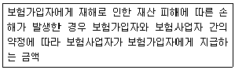
- 보험료
- 손해평가액
- 보험가입금액
- 보험금
(정답률: 81%)
28. 농어업재해보험법상 재해보험의 종류와 보험목적물로 옳지 않은 것은?
- 농작물재해보험: 농작물 및 농업용 시설물
- 임산물재해보험: 임산물 및 임업용 시설물
- 축산물재해보험: 축산물 및 축산시설물
- 양식수산물재해보험: 양식수산물 및 양식시설물
(정답률: 83%)
29. 농업재해보험 손해평가요령에 따른 손해평가인의 업무에 해당하는 것을 모두 고른 것은?
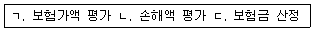
- ㄱ
- ㄱ, ㄴ
- ㄱ, ㄷ
- ㄴ, ㄷ
(정답률: 72%)
30. 농어업재해보험법령상 손해평가인으로 위촉될 수 없는 자는?
- 재해보험 대상 농작물을 6년간 경작한 경력이 있는 농업인
- 공무원으로 농촌진흥청에서 농작물재배 분야에 관한 연구ㆍ지도 업무를 2년간 담당한 경력이 있는 사람
- 교원으로 고등학교에서 농작물재배 분야 관련 과목을 6년간 교육한 경력이 있는 사람
- 조교수 이상으로 「고등교육법」제2조에 따른 학교에서 농작물재배 관련학을 5년간 교육한 경력이 있는 사람
(정답률: 84%)
31. 농어업재해보험법상 손해평가사의 자격 취소사유에 해당되는 자를 모두 고른 것은?
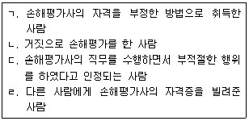
- ㄱ, ㄴ
- ㄷ, ㄹ
- ㄱ, ㄴ, ㄹ
- ㄴ, ㄷ, ㄹ
(정답률: 86%)
32. 농어업재해보험법령상 내용으로 옳지 않은 것은?
- 재해보험가입자가 재해보험에 가입된 보험목적물을 양도하는 경우 그 양수인은 재해보험 계약에 관한 양도인의 권리 및 의무를 승계한 것으로 추정하지 않는다.
- 재해보험의 보험금을 지급받을 권리는 압류할 수 없다. 다만, 보험목적물이 담보로 제공된 경우에는 그러하지 아니하다.
- 재해보험사업자는 재해보험사업을 원활히 수행하기 위하여 필요한 경우에는 보험모집 및 손해평가 등 재해보험 업무의 일부를 대통령령으로 정하는 자에게 위탁할 수 있다.
- 농림축산식품부장관은 손해평가사의 손해평가 능력 및 자질 향상을 위하여 교육을 실시할 수 있다.
(정답률: 82%)
33. 농어업재해보험법상 재정지원에 관한 내용이다. ( )에 들어갈 용어를 순서대로 나열한 것은?
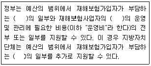
- 재해보험, 보험료, 재해보험
- 보험료, 재해보험, 보험료
- 보험금, 재해보험, 보험금
- 보험가입액, 보험료, 보험가입액
(정답률: 84%)
34. 농어업재해보험법상 재해보험을 모집할 수 있는 자가 아닌 것은?
- 수협중앙회 및 그 회원조합의 임직원
- 산림조합중앙회 및 그 회원조합의 임직원
- 「산림조합법」제48조의 공제규정에 따른 공제모집인으로서 농림축산식품부장관이 인정하는 자
- 「보험업법」제83조(모집할 수 있는 자) 제1항에 따라 보험을 모집할 수 있는 자
(정답률: 77%)
35. 농어업재해보험법상 농어업재해재보험기금의 용도에 해당하지 않는 것은?
- 재해보험가입자가 부담하는 보험료의 일부 지원
- 제20조제2항제2호에 따른 재보험금의 지급
- 제22조제2항에 따른 차입금의 원리금 상환
- 기금의 관리ㆍ운용에 필요한 경비(위탁경비를 포함한다)의 지출
(정답률: 67%)
36. 농어업재해보험법령상 기금의 관리ㆍ운용 등에 관한 내용으로 옳은 것을 모두 고른 것은?
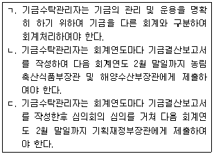
- ㄱ
- ㄱ, ㄴ
- ㄱ, ㄷ
- ㄴ, ㄷ
(정답률: 57%)
37. 농어업재해보험법령상 농림축산식품부장관으로부터 재보험사업에 관한 업무의 위탁을 받을 수 있는 자는?
- 「보험업법」에 따른 보험회사
- 「농업ㆍ농촌 및 식품산업기본법」제63조의2제1항에 따라 설립된 농업정책보험금융원
- 「정부출연연구기관 등의 설립ㆍ운영 및 육성에 관한 법률」제8조에 따라 설립된 연구기관
- 「공익법인의 설립ㆍ운영에 관한 법률」제4조에 따라 농림축산식품부장관 또는 해양수산부장관의 허가를 받아 설립된 공익법인
(정답률: 62%)
38. 농업재해보험 손해평가요령에 따른 보험목적물별 손해평가 단위로 옳은 것은?
- 사과: 농지별
- 벼: 필지별
- 가축: 개별축사별
- 농업시설물: 지번별
(정답률: 77%)
39. 특정위험방식 중 “인삼 해가림시설”의 경우 다음 조건에 해당되는 보험금은?
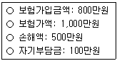
- 300만원
- 320만원
- 350만원
- 400만원
(정답률: 61%)
40. 농업재해보험 손해평가요령에 따른 손해수량 조사방법 중 「적과후∼ 수확전」생육시기에 태풍으로 인하여 발생한 낙엽 피해에 대하여 낙엽률 조사를 하는 과수 품목은?
- 사과
- 배
- 감귤
- 단감
(정답률: 69%)
41. 농업재해보험 손해평가요령에 따른 농작물 및 농업시설물의 보험가액 산정 방법으로 옳은 것은?
- 특정위험방식은 적과전 착과수조사를 통해 산정한 기준수확량에 보험가입 당시의 단위당 가입가격을 곱하여 산정한다.
- 적과전종합위험방식은 보험증권에 기재된 보험목적물의 평년수확량에 보험가입 당시의 단위당 가입가격을 곱하여 산정한다.
- 종합위험방식은 적과후 착과수조사를 통해 산정한 기준수확량에 보험가입 당시의 단위당 가입가격을 곱하여 산정한다.
- 농업시설물에 대한 보험가액은 보험사고가 발생한 때와 곳에서 평가한 피해목적물의 재조달가액에서 내용연수에 따른 감가상각률을 적용하여 계산한 감가상각액을 차감하여 산정한다.
(정답률: 61%)
42. 농업재해보험 손해평가요령에 관한 내용이다. ( )에 들어갈 용어는?
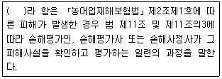
- 피해조사
- 손해평가
- 검증조사
- 현지조사
(정답률: 83%)
43. 농업재해보험 손해평가요령에 따른 손해평가인의 위촉 및 교육에 관한 설명으로 옳지 않은 것은?
- 재해보험사업자는 손해평가인으로 위촉된 자를 대상으로 2년마다 1회 이상의 보수교육을 실시하여야 한다.
- 재해보험사업자는 농어업재해보험이 실시되는 시ㆍ군ㆍ자치구별 보험가입자의 수 등을 고려하여 적정 규모의 손해평가인을 위촉하여야 한다.
- 재해보험사업자는 손해평가인을 위촉한 경우에는 실무교육을 거쳐 그 자격을 표시할 수있는 손해평가인증을 발급하여야 한다.
- 재해보험사업자 및 재해보험사업자의 업무를 위탁받은 자는 손해평가보조인을 운용할 수 있다.
(정답률: 86%)
44. 농업재해보험 손해평가요령에 따른 손해평가인 위촉의 취소 사유에 해당되지 않는 자는?
- 파산선고를 받은 자로서 복권되지 아니한 자
- 손해평가인 위촉이 취소된 후 1년이 경과되지 아니한 자
- 거짓 그 밖의 부정한 방법으로 손해평가인으로 위촉된 자
- 「농어업재해보험법」제30조에 의하여 벌금이상의 형을 선고받고 그 집행이 종료되거나 집행이 면제된 날로부터 3년이 경과된 자
(정답률: 69%)
45. 농업재해보험 손해평가요령에 따른 손해평가준비 및 평가결과 제출에 관한 내용이다. ( )에 들어갈 숫자는?
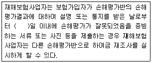
- 5
- 7
- 10
- 14
(정답률: 80%)
46. 농업재해보험 손해평가요령에 따른 손해평가결과의 검증조사에 관한 설명으로 옳은 것은?
- 재해보험사업자 및 재해보험사업의 재보험사업자는 손해평가결과를 확인하기 위하여 손해평가를 미실시한 보험목적물 중에서 일정수를 임의 추출하여 검증조사를 할 수 있다.
- 농림축산식품부장관은 재해보험사업자로 하여금 검증조사를 하게 할 수 있으며, 재해보험 사업자는 이에 반드시 응하여야 한다.
- 검증조사결과 현저한 차이가 발생되어 재조사가 불가피하다고 판단될 경우 해당 손해평가반이 조사한 전체 보험목적물에 대하여 재조사를 할 수 있다.
- 보험가입자가 정당한 사유없이 검증조사를 거부하는 경우 검증조사반은 검증조사가 불가능하여 손해평가 결과를 확인할 수 없다는 사실을 보험사업자에게 통지한 후 검증조사결과를 작성하여 제출하여야 한다.
(정답률: 71%)
47. 농업재해보험 손해평가요령에 따른 손해평가반 구성으로 잘못된 것은?
- 손해평가인 1인을 포함하여 3인으로 구성
- 손해사정사 1인을 포함하여 4인으로 구성
- 손해평가인 1인과 손해평가사 1인을 포함하여 5인으로 구성
- 손해평가보조인 5인으로 구성
(정답률: 87%)
48. 농어업재해보험법상 재해보험사업자가 재해보험사업의 회계를 다른 회계와 구분하지 않고 회계 처리한 경우에 해당하는 벌칙은?
- 300만원 이하의 과태료
- 500만원 이하의 과태료
- 500만원 이하의 벌금
- 1년 이하의 징역 또는 1,000만원 이하의 벌금
(정답률: 58%)
49. 손해평가인이 업무수행과 관련하여 「개인정보보호법」, 「신용정보의 이용 및 보호에 관한 법률」등 정보보호와 관련된 법령을 위반한 경우, 재해보험사업자가 손해평가인에게 명할 수 있는 최대 업무 정지기간은?
- 6개월
- 1년
- 2년
- 3년
(정답률: 62%)
50. 농어업재해보험법상 농업재해보험사업의 효율적 추진을 위하여 농림축산식품부장관이 수행하는 업무가 아닌 것은?
- 재해보험사업의 관리ㆍ감독
- 재해보험 상품의 개발 및 보험요율의 산정
- 손해평가인력의 육성
- 손해평가기법의 연구ㆍ개발 및 보급
(정답률: 81%)
3과목: 재배학 및 원예작물학
51. 추파 일년초에 속하는 화훼작물은?
- 팬지
- 맨드라미
- 샐비어
- 칸나
(정답률: 70%)
52. 식물체 내 물의 기능으로 옳지 않은 것은?
- 세포의 팽압 형성
- 감수분열 촉진
- 양분 흡수와 이동의 용매
- 물질의 합성과 분해과정 매개
(정답률: 70%)
53. ( )에 들어갈 내용은?
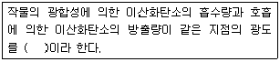
- 광반응점
- 광보상점
- 광순화점
- 광포화점
(정답률: 66%)
54. 단일일장(short day length) 조건에서 개화 억제를 위해 야간에 보광을 실시하는 작물은?
- 장미
- 가지
- 국화
- 토마토
(정답률: 74%)
55. 건물 1 g을 생산하는 데 필요한 수분량인 요수량(要水量)이 가장 높은 작물은?
- 기장
- 옥수수
- 밀
- 호박
(정답률: 72%)
56. 종자번식에서 자연교잡률이 4 % 이하인 자식성 작물에 속하는 것은?
- 토마토
- 양파
- 매리골드
- 베고니아
(정답률: 49%)
57. 작물의 병해충 방제법 중 생물적 방제에 해당하는 것은?
- 윤작 등 작부체계의 변경
- 멀칭 및 자외선 차단필름 활용
- 천적 곤충 이용
- 태양열 소독
(정답률: 83%)
58. 해충과 천적의 관계가 바르게 짝지어지지 않은 것은?
- 잎응애류 - 칠레이리응애
- 진딧물류 - 온실가루이
- 총채벌레류 - 애꽃노린재
- 굴파리류 - 굴파리좀벌
(정답률: 70%)
59. ( )에 들어갈 내용을 순서대로 바르게 나열한 것은?
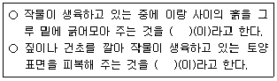
- 중경, 멀칭
- 배토, 복토
- 배토, 멀칭
- 중경, 복토
(정답률: 68%)
60. 영양번식(무성번식)에 관한 설명으로 옳지 않은 것은?
- 과수의 결실연령을 단축시킬 수 있다.
- 모주의 유전형질이 똑같이 후대에 계승된다.
- 번식체의 취급이 간편하고 수송 및 저장이 용이하다.
- 종자번식이 불가능한 작물의 번식수단이 된다.
(정답률: 68%)
61. 작휴법 중 성휴법에 관한 설명으로 옳은 것은?
- 이랑을 세우고 낮은 고랑에 파종하는 방식
- 이랑을 보통보다 넓고 크게 만드는 방식
- 이랑을 세우고 이랑 위에 파종하는 방식
- 이랑을 평평하게 하여 이랑과 고랑의 높이가 같게 하는 방식
(정답률: 65%)
62. 작물 생육기간 중 수분부족 환경에 노출될 때 일어나는 반응을 모두 고른 것은?
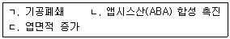
- ㄱ
- ㄱ, ㄴ
- ㄴ, ㄷ
- ㄱ, ㄴ, ㄷ
(정답률: 63%)
63. 작물 재배 중 온도의 영향에 관한 설명으로 옳은 것은?
- 조직 내에 결빙이 생겨 탈수로 인한 피해가 발생하는 것을 냉해라고 한다.
- 세포 내 유기물 생성이 증가하면 에너지 소비가 심해져 내열성은 감소한다.
- 춘화작용은 처리기간과 상관없이 온도의 영향을 받는다.
- 탄소동화작용의 최적온도 범위는 호흡작용보다 낮다.
(정답률: 53%)
64. 토양습해 예방 대책으로 옳은 것은?
- 내습성 품종 선택
- 고랑 파종
- 미숙 유기물 사용
- 밀식 재배
(정답률: 67%)
65. 작물 피해를 발생시키는 대기오염 물질이 아닌 것은?
- 아황산가스
- 이산화탄소
- 오존
- 불화수소
(정답률: 80%)
66. 염해(salt stress)에 관한 설명으로 옳지 않은 것은?
- 토양수분의 증발량이 강수량보다 많을 때 발생할 수 있다.
- 시설재배 시 비료의 과용으로 생기게 된다.
- 토양의 수분포텐셜이 높아진다.
- 토양수분 흡수가 어려워지고 작물의 영양소 불균형을 초래한다.
(정답률: 79%)
67. 강풍이 작물에 미치는 영향으로 옳지 않은 것은?
- 상처로 인한 호흡률 증가
- 매개곤충의 활동저하로 인한 수정률 감소
- 기공폐쇄로 인한 광합성률 감소
- 병원균 감소로 인한 병해충 피해 약화
(정답률: 82%)
68. 채소작물 중 조미채소류가 아닌 것은?
- 마늘
- 고추
- 생강
- 배추
(정답률: 84%)
69. 과수의 엽면시비에 관한 설명으로 옳지 않은 것은?
- 뿌리가 병충해 또는 침수 피해를 받았을 때 실시할 수 있다.
- 비료의 흡수율을 높이기 위해 전착제를 첨가하여 살포한다.
- 잎의 윗면보다는 아랫면에 살포하여 흡수율을 높게 한다.
- 고온기에는 살포농도를 높여 흡수율을 높게 한다.
(정답률: 70%)
70. 과수와 그 생육특성이 바르게 짝지어지지 않은 것은?
- 사과나무 - 교목성 온대과수
- 블루베리나무 - 관목성 온대과수
- 참다래나무 - 덩굴성 아열대과수
- 온주밀감나무 - 상록성 아열대과수
(정답률: 63%)
71. 과수 재배조건이 과실의 성숙과 저장에 미치는 영향으로 옳지 않은 것은?
- 질소를 과다시용하면 과실의 크기가 비대해지고 저장성도 높아진다.
- 토양수분이 지나치게 많으면 이상숙성 현상이 일어나 저장성이 떨어진다.
- 평균기온이 높은 해에는 과실의 성숙이 빨라지므로 조기수확을 통해 저장 중 품질을 유지할 수 있다.
- 생장 후기에 흐린 날이 많으면 저장 중 생리장해가 발생하기 쉽다.
(정답률: 70%)
72. 과수재배 시 봉지씌우기의 목적이 아닌 것은?
- 과실에 발생하는 병충해를 방제한다.
- 생산비를 절감하고 해거리를 유도한다.
- 과피의 착색도를 향상시켜 상품성을 높인다.
- 농약이 직접 과실에 부착되지 않도록 하여 상품성을 높인다.
(정답률: 77%)
73. 화훼재배에 이용되는 생장조절물질에 관한 설명으로 옳은 것은?
- 루톤(rootone)은 옥신(auxin)계 생장조절물질로 발근을 촉진한다.
- 에테폰(ethephon)은 에틸렌 발생을 위한 기체 화합물로 아나나스류의 화아분화를 억제한다.
- 지베렐린(gibberellin) 처리는 국화의 줄기신장을 억제한다.
- 시토키닌(cytokinin)은 옥신류와 상보작용을 통해 측지발생을 억제한다.
(정답률: 59%)
74. ( )에 들어갈 내용으로 옳은 것은?
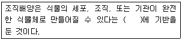
- 전형성능
- 유성번식
- 발아세
- 결실률
(정답률: 72%)
75. 시설원예 피복자재의 조건으로 옳지 않은 것은?
- 열전도율이 낮아야 한다.
- 겨울철 보온성이 커야 한다.
- 외부 충격에 강해야 한다.
- 광 투과율이 낮아야 한다.
(정답률: 77%)
ㄱ. 보험자가 보험약관을 교부하지 않은 경우
ㄴ. 보험자가 보험약관을 교부하였으나, 보험자의 설명의무를 다한 것으로 인정되는 경우
ㄷ. 보험자가 보험약관을 교부하고 설명의무를 다하지만, 특별한 사정으로 인해 보험자의 설명이 불가능한 경우
이 중에서 "ㄱ, ㄴ, ㄷ"이 정답인 이유는 보험자가 보험약관을 교부하지 않은 경우나 보험자의 설명의무를 다한 것으로 인정되는 경우는 명확하게 설명할 필요가 없기 때문입니다. 또한, 보험자가 보험약관을 교부하고 설명의무를 다하지만, 특별한 사정으로 인해 보험자의 설명이 불가능한 경우는 예외적인 경우이므로 이 역시 명확하게 설명할 필요가 없습니다.